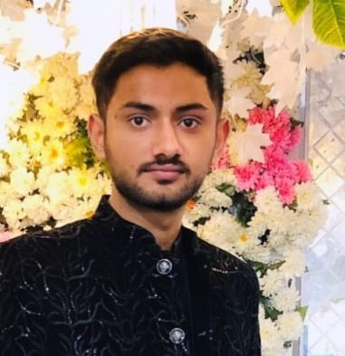

DANISH ALI

Email: d9963534@gmail.com
Phone: 03020043773
Location: Faisalabad, Pakistan
Profile:
Passionate and detail-oriented front-end developer with experience building
responsive and accessible web interfaces. Strong knowledge of HTML and good
understanding of modern web practices. Eager to learn and contribute to
real-world projects.
Education:
-
BS in Computer Science
GC University Faisalabad 2025 – Present
CGPA: 3.6 / 4.0
-
Intermediate
Punjab College Faisalabad (2022 – 2024)
Skills:
Technical skills and tools:
- HTML5
- CSS3 (basic)
- JavaScript (basic)
- Git & GitHub
- Responsive layout principles
Experience:
-
Freelance Web Designer
2023 – Present
Built responsive landing pages for small businesses; set up basic analytics.
-
Front-End Intern
Jun 2024 – Aug 2024
Created reusable HTML components and assisted with accessibility fixes.
Languages:
- English — Fluent
- Urdu — Native